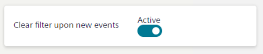

Filtering Event List
You can filter the list of events, for example, so that it only shows events that belong to a certain category (such as Fault), or events in a specific state (such as Ready to be reset).
Note that:
- Depending on your profile, you may not be able to send event-handling commands when Event List is filtered.
- Applying a filter by category interrupts any investigative treatment or assisted treatment in progress.
- If investigative treatment or assisted treatment of an event is in progress, you cannot filter the list of events by multiple criteria (the Filter button is visible but unavailable). You can only filter by category with event lamps.
- Filters that you save are user-specific and will not be visible to other users of the system.
Filter by Category with Event Lamps
- The Summary bar contains at least one event lamp (category) for which there are events.
- In the Summary bar, select the lamp whose events you want to view.
- Event List displays a filtered list containing only the events belonging to the category of that event lamp. The currently applied filter displays top left of the list.
Filter by Multiple Criteria Simultaneously
- In the Events workspace, select Filter.
- The Filter dialog box displays. The following multiple criteria are available: Description, Name, Alias, Category, Discipline, Event state, Source state, Date and time, and Hidden events.
- Set one or more of the filter criteria as follows:
- Use the Search box to enter some text and filter by one of the selected criteria among Name, Description, or Alias.
- Select any other criterion you want to apply (for example, Discipline) and then select one or more values (for example, Building Automation). You can also use the Search box to enter some text to find a specific value. Repeat this step for any other additional filter criteria.
- Event List displays the list of events filtered accordingly. The currently applied filter displays top left of the list.
- Select to confirm and close the Filter dialog box.
- The next time you open the Filter dialog box, the current filter will display in the place of Saved filters on top.
Clear Filters
- Top left of the list, select next to the filter you want to clear.
- Event List displays the list of events unfiltered accordingly.
The next time you open the Filter dialog box, Saved filters displays on top instead of any name of saved filters. - Repeat the previous step for all the filters you want to clear.
Save a New Event Filter for Reuse
- In the Events workspace, select Filter.
- The Filter dialog box opens.
- Do one of the following:
- If no filter is already applied, you can create a filter from scratch:
a. Specify the wanted filter criteria.
b. Select Save.
c. In the Save filter as field, enter a name for the filter.
d. Select to confirm. - If the current filter is already applied but not yet saved, you can save it for later reuse:
a. Select Save.
b. In the Save filter as field, enter a name for the filter.
c. Select to confirm. - If the current filter is already saved, you can modify it and create a new filter with a different name:
a. Modify the filter criteria.
b. Select Save.
c. In the Save filter as field, enter a name for the filter.
d. Select to confirm. - If multiple filters are already saved, you can choose one of them to modify and create a new filter with a different name:
a. Select the current filter on top of the Filter dialog box.
b. In the Available filter list, select the filter you want to save as a new filter.
c. Modify the filter criteria.
d. Select Save.
e. In the Save filter as field, enter a name for the filter.
f. Select to confirm.
Reuse a Saved Event Filter
- You previously saved an event filter for future use.
- In the Events workspace, select Filter.
- Select the current filter on top of the Filter dialog box.
- The Available filter list opens. The currently applied filter is highlighted in bold type.
- Select the filter you want to apply from the list.
- The name of the current filter displays on top of the Filter dialog box. In the Events workspace, the list is filtered accordingly.
Modify a Saved Event Filter
- You previously saved an event filter for future use.
- In the Events workspace, select Filter.
- Select the current filter on top of the Filter dialog box.
- The Available filter list opens.
- Select the filter you want to modify from the list.
- Select the current filter on top of the Filter dialog box. In the Available filter list, select the filter you want to modify.
- Do your changes.
NOTE: You cannot change the name of a filter. - Select to confirm and close the Filter dialog box.
Delete Saved Event Filters
- You previously saved at least an event filter for future use.
- In the Events workspace, select Filter.
- Select the current filter on top of the Filter dialog box.
- In the Available filter list, do one of the following:
- To remove all of the saved filters, select Delete all .
- To remove a specific filter, select next to the filter you want to delete.
Note that deleting a filter does not clear the current settings in the Filter dialog box. Also, this action does not remove any applied filters.
Autoremove Filters
When you apply filters to Event List, it means you will not see any new incoming events that do not match the current filter criteria.
To avoid missing events, you can set your Flex Client to automatically remove all filters whenever a new event comes in. Whether this capability is enabled or disabled by default depends on your client profile.
- In the horizontal navigation bar, select your initials, and then select Account.
- The account page displays.
- Select Edit.
- The settings are available for editing.

- Switch on or switch off Clear filter upon new events.
- Enabling autoremove means that when new events come in any applied filters will be automatically removed.
- Disabling autoremove means that any applied filters will persist even if new events come in.
- Confirm changes with Save.